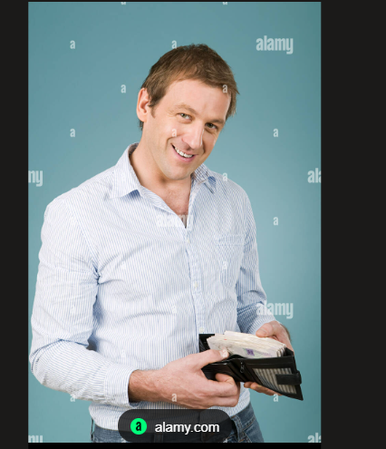

Built for privacy. Designed for clarity.
CoinKeeper is a personal finance tracker that runs entirely inside your browser. No accounts, no cloud uploads, no surveillance — just a clean, fast ledger that belongs to you alone.

Our Mission
To give every person a frictionless, private window into their own financial world. CoinKeeper runs entirely in your browser so your data never touches a server we own or operate. Every computation stays on your local node.
Our Vision
A world where financial tools respect the user instead of monetising them. We are building toward a future where zero-knowledge interfaces are the standard — not the exception — for consumer finance software.
How CoinKeeper Works
Client-Side Computation
All balance tracking and matrix evaluations run directly inside your browser tab. Nothing is sent outbound.
Sandboxed Storage
Session data evaporates when you close the tab. No cookies, no fingerprints, no cached trails left behind.
Zero Telemetry
No analytics scripts, no tracking pixels, no server calls. The only external resource is Bootstrap for layout.
The Team
CoinKeeper was built by a small team of developers and designers who believe your financial data belongs to you — and only you.
Karl Kinyua
Co-Founder · Lead EngineerArchitected the client-side computation engine and sandboxed storage layer.
Kel Ochieng
Co-Founder · ProductShapes the product vision and ensures every feature puts user privacy first.
SantanaRose Masawa
Lead Designer · UXDesigned the glassmorphic interface and crafted the visual language of CoinKeeper.
Want to get in touch with the team?
Write to Us